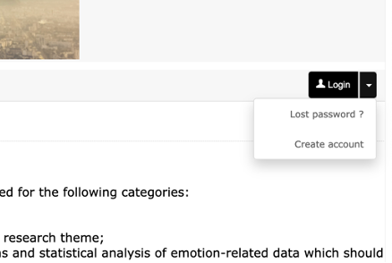
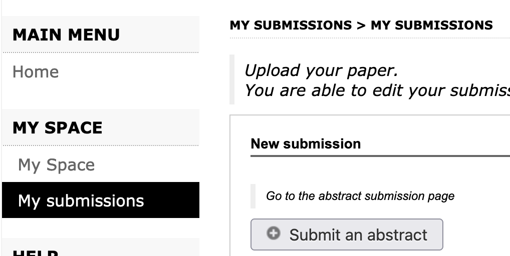
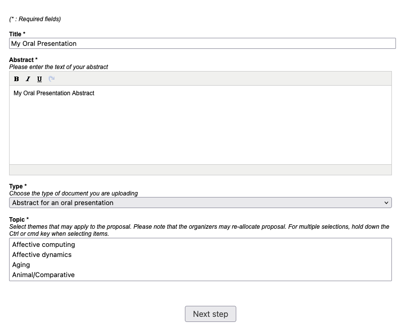
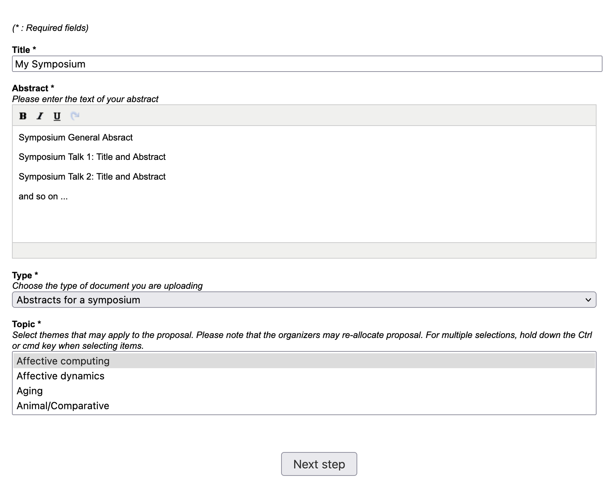
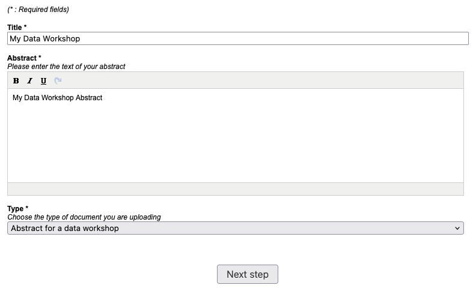
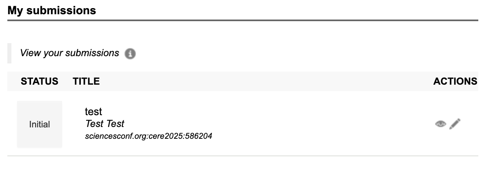

Submission Tutorial
To submit your abstract for #CERE205: click here to access the submission portal.
Step 1: Log In or Register
If you already have an account on sciencesconf.org, simply click Login. If not, click on the drop-down arrow and select Create account.
After creating your account, you will receive an email to verify it. If this email does not arrive, it may be due to a typo in the email address provided.

Step 2: Start a New Submission
On the left-hand menu, under MY SPACE, click on My submissions. Then, begin the process by selecting Submit an abstract.
Click on “Submit an abstract” if you are submitting for an oral presentation**, for a poster presentation, for a data workshop, or if you are submitting multiple abstracts for a symposium.

Step 3: Complete the Submission Form
Provide all the required details for your submission, including the title, abstract(s), submission type (i.e., oral presentation, symposium, poster, or data workshop), and the topic. Then click “Next Step”.
If you are submitting a symposium, please do not submit each talk individually. Instead, enter the symposium abstract in the text box, followed by each presenter’s abstract along with the authors’ names, see Symposium tab below for example.



Step 5: Review and Submit
A pdf document will be generated with all information provided. Review the details of this document and click “Submit”. A email will be sent to you to confirm your submission.
Abstracts that are not submitted are not kept on the platform. You will have to start again if you close the sciencesconf web browser tab.
Modify and Track your Submission
You will be able to edit your submission up until the review process starts. Once the review process started, you can track the status of the submission: Initial, Note, Accepted, Refused and Awaiting update.

Click here for more information about the sciencesconf platform.